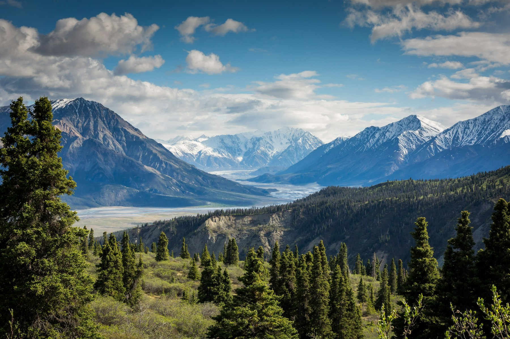
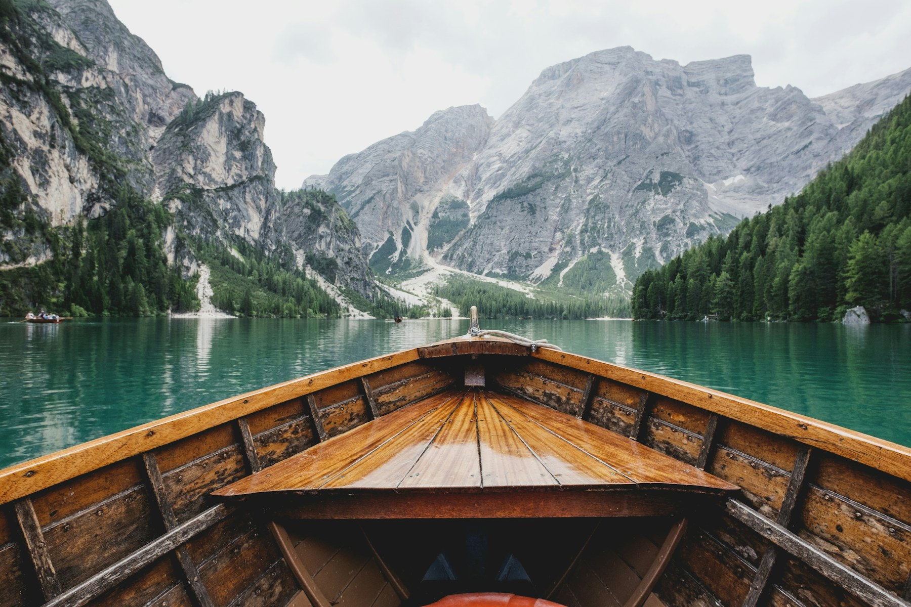

Village location
An accessible, quiet, and characterful starting point in Kulakkaya.

Ziver Başar Konağı
Set in the village area of Kulakkaya, the hotel creates a rhythm that feels honest rather than showy: cool air, warm light, simple rooms, and a stay close to nature.
Get directions and details





Experience
An accessible, quiet, and characterful starting point in Kulakkaya.
An atmosphere that begins with cool mornings and ends in warm evening light.
As you rise into Giresun's highlands, the route becomes part of the stay.
Room details and availability are shared directly according to your dates.
The mood is completed by timber, stone, warm light, and quiet pauses.
The best highland days often begin around an unhurried table.
At the end of the road, the hotel is defined by its light and texture.
Nature
Forest textures, misty highland mornings, and stone roads complete the calm character of the hotel. It works for a short escape or a slower weekend with the same quiet simplicity.
Rooms
Table
Current service and accommodation details are clarified during reservation. This site is designed to help guests reach us quickly and continue the conversation directly.


Guest Feeling
“A warm-lit highland house, close to nature and far from excess.”
Contact
Kulakkaya Mahallesi, Köy İçi Mevki, No:80, 28960 Dereli/Giresun